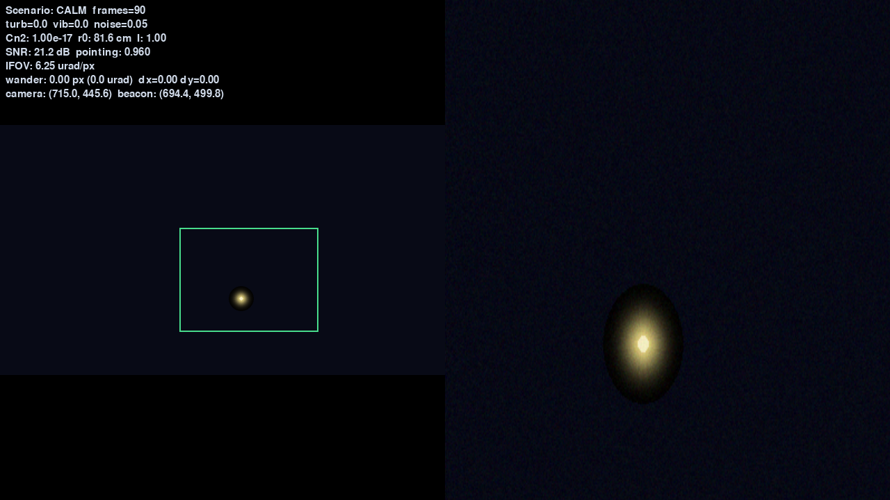
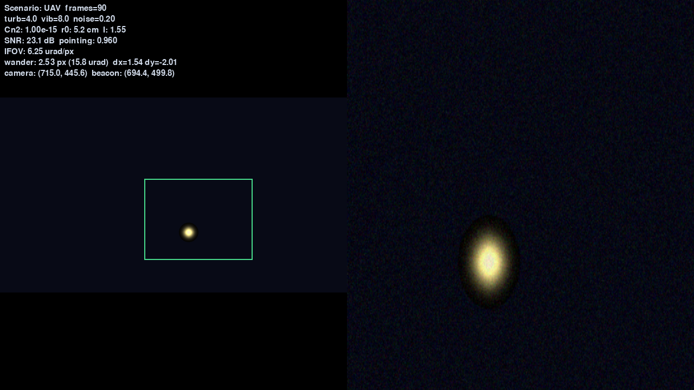
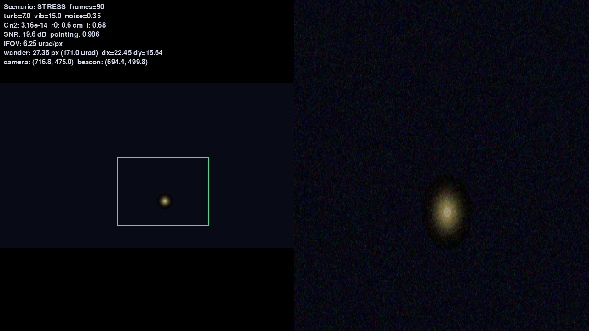
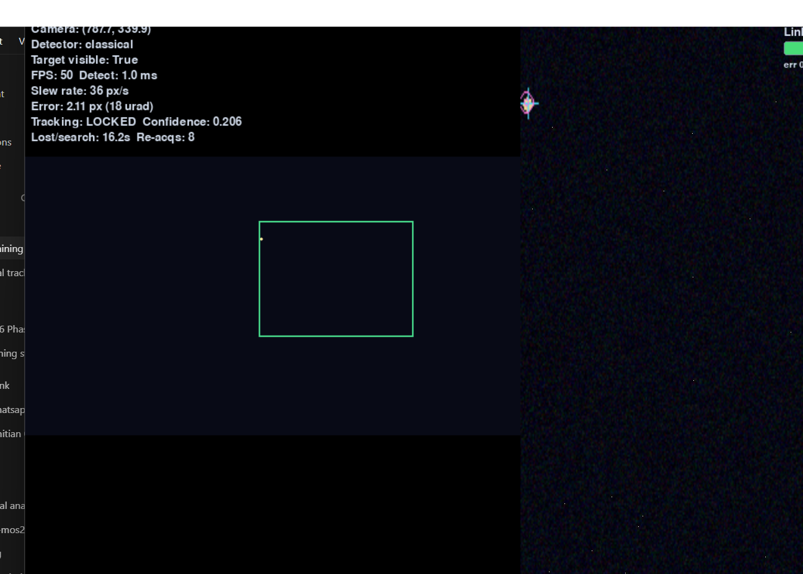
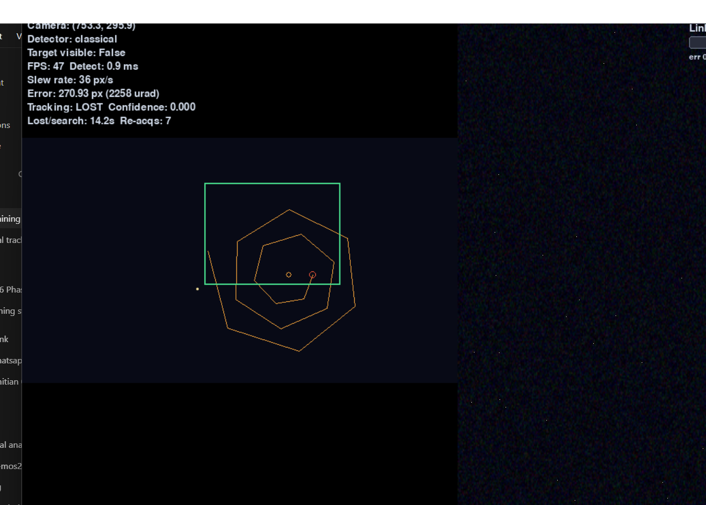
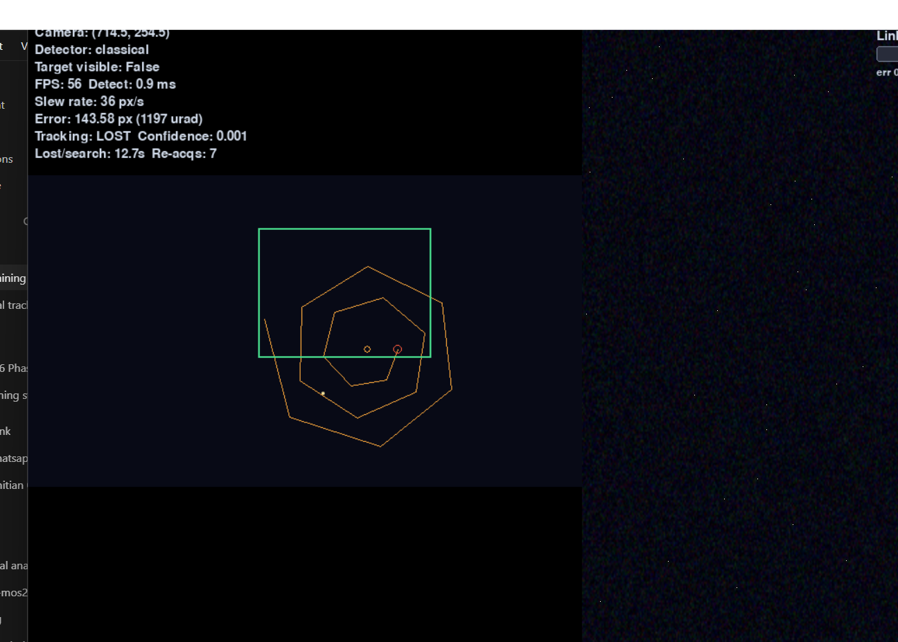

What it does
- Closed-loop AZ/EL coarse PAT
- Cn² physics channel + SNR readiness
- Classical or AI+fusion detection
- Raster re-acq · Fine handoff ≥0.7
BeamLock is a real-time PAT sandbox: detect a beacon, Kalman-track it, slew an AZ/EL camera under turbulence, recover with raster search, and hand off to a Fine 4-QD mock when Link Readiness is high.
Headless recording of the real simulation loop (same detectors, Kalman, raster re-acq, Fine handoff).
git clone https://github.com/MudithDShetty/SIH.gitcd SIH/fsoc-virtual-trackerpip install -r requirements.txtpython main.pyF1 Calm · F2 UAV · F3 Stress · T Classical/AI+fusion · L force loss · B multi-beaconstreamlit run report.py




L)